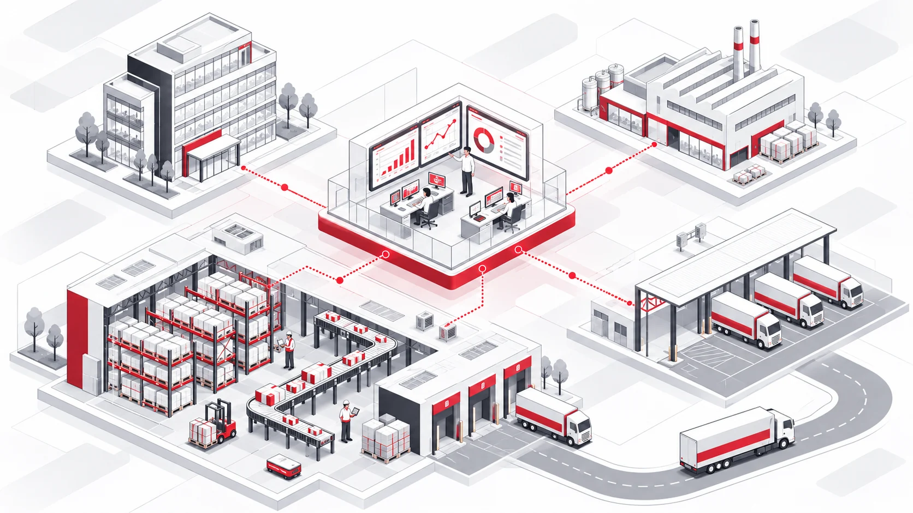

About PAL
PALを知る。
現場・技術・人をつなぐところから、物流の仕組みを変えていく。
それが、PALの仕事です。
Who we are
現場を動かす。仕組みをつくる。
PALは、物流現場の運営を自ら請け負いながら、システム・設備・データを組み合わせて現場で使われる仕組みをつくる会社です。

1 2 3 4
1FDE現場と技術をつなぐ
2BPO倉庫・現場の運営
3DTS輸配送・運行
4システム開発管理・可視化の仕組みをつくる
- 統合アプローチロジテックインテグレーション
- 物流DXを戦略から実行まで一気通貫で支援する、PALのサービスです。
- 実践環境倉庫オートメーションセンター
- 自動化設備とデータ連携を組み合わせた運用を、実際に動かしている場所です。
導入している設備やシステム、PALの強みの詳細は、コーポレートサイトのサービスページで公開しています。
Our people & culture
違う専門性が、ひとつの仕事を動かす。
PALには、物流センターの運営を担う人、現場課題を整理するFDE、仕組みを開発するエンジニアなど、異なる専門性を持つメンバーがいます。
- BPO / Operation
BPO・現場運営
現場を安定させ、改善を進める
- Forward Deployed Engineer
FDE
現場課題を技術につなぐ
- System / Product
システム・プロダクト開発
現場で使われる仕組みをつくる
3つの領域に上下関係はありません。
この領域で働く人
 BPO・現場運営
BPO・現場運営毎日の運営の中に、次の改善がある。
I.NBPO事業部 Productivity推進部 FDE
FDE現場で使われて、初めて「できた」と言える。
H.YFDE・2023年新卒入社 システム・プロダクト開発
システム・プロダクト開発つくるのは、現場が明日から使えるもの。
M.MDXプロダクト開発・2026年中途入社
If you come from the field
現場運営の経験がある方へ。
日々の運営に加えて、システムや自動化設備、データを使った現場改善にも接点があります。
- 01現場の当事者となる
- 02個を尊重し、平等に接する
- 03自分の「手」で変えていく
FDEとセンター長／候補では、入社時の高いITスキルを必須としていません。技術力よりも人物面を最優先しています。
一方で、自社開発 Web・アプリエンジニアは、何らかのWeb系システム開発の実務経験を応募条件としています。
応募条件は職種ごとに異なるため、各募集要項をご確認ください。